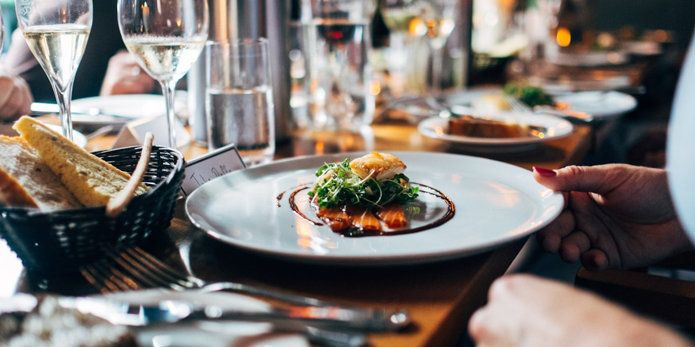

Table for 1200 Winnipeg: The Secret-Location Dinner in May

Storefront Manitoba seats about twelve hundred people at one long table, outdoors, on a Saturday in late May, and tells none of them where it is until the day of the dinner. The 2026 edition ran on Saturday, May 30, with doors at 4:30 p.m. 2024 was May 25. No 2027 date has been posted. What follows is how the day goes, in the order it happens, so you know which parts you can leave until the morning and which you cannot.
Weeks ahead: the only part with a deadline
Tickets go through Storefront's own ticketing page, and they go fast; the 2014 dinner sold out inside a day. For 2026 the organisation listed general admission at $189, which is $180 plus GST and covers admission and dinner for one, and a sponsored table of eight seats at $1,785. Sales are final, so this is the decision to make with a calendar open.
The choice between the two is not only about money. A single seat drops you between people you have never met, which is most of the reason the dinner exists. A sponsored table hands you the eight chairs and the job that comes with them: you decorate it, and you are the one on site in the early afternoon doing it. There are prizes for the best table design, and the tables that win are not the ones assembled from whatever was in the car.
One more thing to settle in advance is what you wear. For 2026 Storefront asked for black and white with pops of pink, its own brand colours. In earlier years the instruction was simply white. It has moved, so read this year's page rather than a photo from a past dinner.
Noon: the location drops
Storefront announced the 2026 site at noon on the day of the dinner. Until that message arrives you know the hour and nothing else, which sounds worse than it is, because every site so far has been central. The first dinner, in 2014, ran the length of the Esplanade Riel. In 2015 the tables formed a circle around the fountain on the grounds behind the Manitoba Legislature. Later years have used Waterfront Drive, the east end of the Exchange District around One Lombard Place at Portage and Main, and, in 2025, the Wehwehneh Bahgahkinahgohn Parkade downtown.
Plan for downtown or the Exchange and you will be within a few blocks of wherever it lands. Plan to drive and you will spend the hour after the reveal working out where to leave the car on a Saturday evening, which is the part of the day most likely to go wrong.
2 p.m.: table captains get in
If you have taken a sponsored table, this is when you are allowed on site, and the four hours between then and service are the real cost of the eight seats. Centrepieces, linens, overhangs, whatever you have built: it all has to travel to an address you learned two hours earlier. People do it anyway, year after year, and the tables that come out of it are why the photographs of this event look the way they do.
4:30 p.m.: doors
Winnipeg's version is not Dîner en Blanc, and the difference matters when you are packing. You do not carry your own table, your own chairs or your own food. There is no invitation to wait for; the tickets are sold publicly to anyone who wants one, and the meal is cooked for you. In past years that meal has run to seven courses served family style, by Winnipeg chefs including Mandel Hitzer and Ben Kramer. At the early dinners each table arrived with a bottle of red and a bottle of white on it, with beer and more wine for sale on site. The menu and what is included have moved from year to year, so the ticket page is the thing to read, not this paragraph.
Proceeds go to Storefront Manitoba, which spends the year on architecture, design and urbanism in the province. The dinner is its fundraiser and its argument at the same time: it takes a bridge deck, a parkade or a stretch of street that nobody thinks of as a room and puts twelve hundred chairs in it for one evening.
About 9:25 p.m.: the light goes
Sunset in Winnipeg on the last Saturday of May falls around 9:25 p.m. Doors at 4:30 means the whole meal runs in daylight, with the late courses landing as the sun comes off the table. That is also when the temperature moves. Bring a layer you can put on without leaving your seat, because there is no indoors to retreat to and the walk back to a warm room is not short if the site is on a bridge or a roof.
Where to stay for Table for 1200
Our three-bedroom home is in Crescentwood, south of the Assiniboine. Portage and Main, which is about as central as the dinner has ever landed, is roughly 9 minutes and 3.9 km away by car. Transit covers the same ground without the parking problem: the BLUE line runs the Southwest Transitway into downtown along Portage Avenue, and the D19 Corydon ends at the Kennedy Street terminal a few blocks from the same corner.
That is worth more than it sounds on a day when you learn the address at noon. Staying somewhere you can leave on foot or on a bus means the reveal changes your route and nothing else. Corydon Avenue is about a ten-minute walk south of our door if you want a drink before you head in, or somewhere to end up afterwards. Late May weekends in Winnipeg fill early, often for events that have not been announced yet, so a booking made around a dinner whose date you are still waiting on is safer than one made after. Check our Airbnb listing for what is open that weekend.
Before you go: The date, the ticket price, the dress code and the reveal time are all set fresh each year, and tickets sell out. Confirm them at storefrontmb.ca before you book a trip around the dinner.